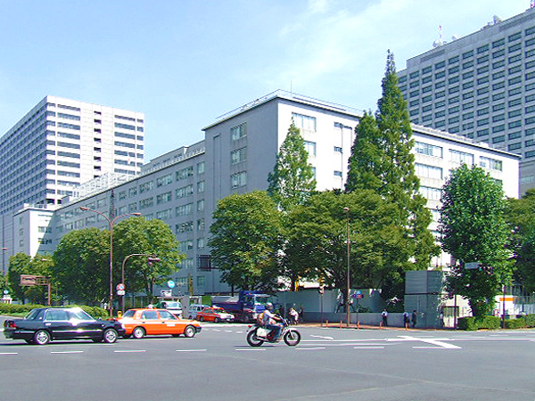
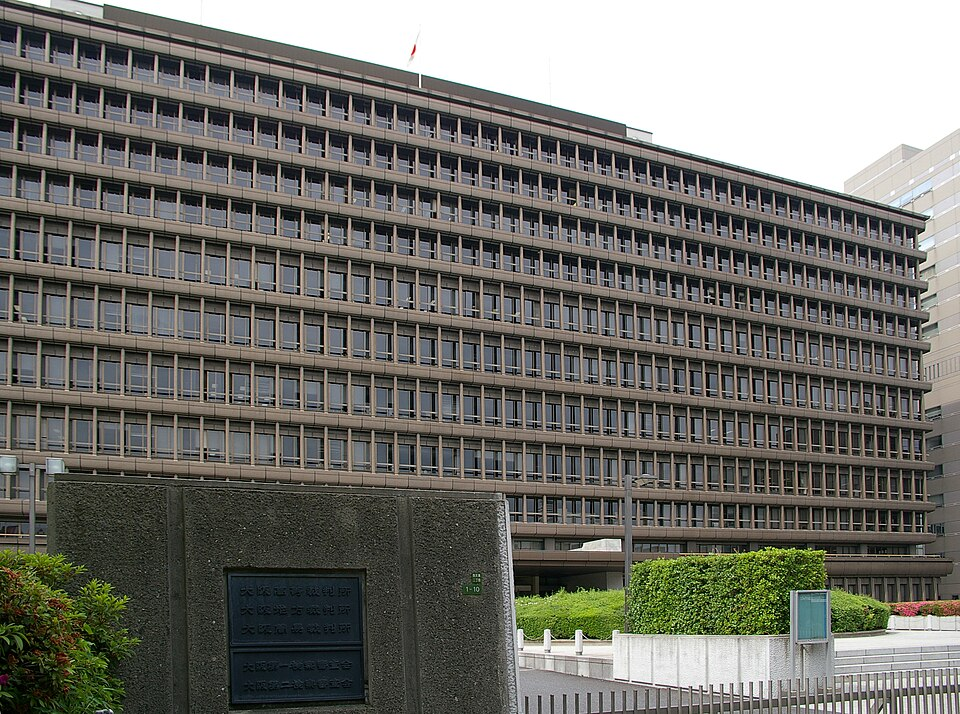

.jpg){kind=link}


石
石川哲郎
いしかわ・てつろう
雪印乳業社長
役割：食中毒時の経営トップ。事件後に書類送検された
その後：刑事有罪判決は確認できない7
2000年〜2009年
2000年、雪印乳業大樹工場の停電後に製造された脱脂粉乳が大阪工場の低脂肪乳などに使われ、14,780人の有症者を出す食中毒事件になった。1
2002年、子会社の雪印食品はBSE対策の国産牛肉買上げ制度に輸入牛肉を混入させ、279,467.7kgを国産牛肉として申請して195,627,390円の振込を受けた。2
西宮冷蔵の水谷洋一による通報と報道を契機に偽装が発覚し、雪印食品は2002年4月末に解散した。食中毒では現場責任者が有罪となった一方、牛肉偽装では元専務・元常務が無罪となった。3
発端は2000年3月31日、北海道の雪印乳業大樹工場で発生した停電だった。厚生省・大阪市原因究明合同専門家会議は、停電によって生乳または製造ライン内の乳が通常の冷却工程に進まず、黄色ブドウ球菌が増殖してエンテロトキシンA型を産生したと判断した。国立感染症研究所の報告では、加温後の乳が20〜50℃で滞留し、停電復旧後に廃棄されず。脱脂粉乳製造に使用された可能性が示された。雪印乳業側の報告は廃棄したとしていたが、行政の再現作業は別の可能性を示した。14
クリーム分離工程は､ 停電当時､ 生乳の加温からクリーム分離､ 冷却の過程で､ 通常は数分間で冷却工程に送られるべきものが､ 20～50℃に加温された状態で滞留し､ 最初の停電復旧後､ 廃棄されずに停電前後の脱脂乳とともに貯乳タンクに貯乳され､ そのまま脱脂粉乳の製造に使用された可能性があることが立ち入り検査の再現作業において示唆された［雪印乳業(株)の報告では､ 廃棄］。この乳が低温の貯乳タンク内に投入されるまで､ 20～30℃に保持された時間は停電発生からクリーム分離工程の遠心器の作動が確認されたことが記録された15時10分までの４時間程度［雪印乳業(株)からの報告によると､ 当該装置のCIPの開始時間である14時40分頃までの約３時間40分］である。 濃縮工程のライン乳タンクには､ ライン乳 800l が投入され､ 付属の冷却器はライン乳タンク投入終了後､ 30分程度作動したものの､ 停電により停止し､ 停電の復旧作業が終了するまで､ 約９時間以上ライン乳タンク内で放置された。
意味：行政の再現作業が示した工程上の可能性と、会社報告の「廃棄」との食い違いが明記されている。([同資料](https://idsc.niid.go.jp/iasr/22/258/dj2582.html))
4月1日、大樹工場で脱脂粉乳が製造され、4月10日には再製品添加用の脱脂粉乳が製造された。その後、この脱脂粉乳が大阪工場へ送られ、低脂肪乳などに使用された。6月27日、大阪市保健所に低脂肪乳による嘔吐の初回申出があり、翌28日には複数の苦情が寄せられた。6月30日、大阪市は回収命令を出し、7月2日には低脂肪乳から黄色ブドウ球菌エンテロトキシンA型が検出され。大阪工場を営業禁止とした。発症者は最終的に14,780人に達した。254
本(2000)年６月末に発生した雪印乳業(株)大阪工場(以下「大阪工場」)製造の低脂肪乳等を原因とする食中毒事件の有症者数は14,780名に達し､ 近年例をみない大規模食中毒事件となった。７月２日､ 低脂肪乳から黄色ブドウ球菌のエンテロトキシンＡ型(以下SEA)が検出されたことから､ 大阪市は､ これを病因物質とする食中毒と断定して､ 大阪工場を営業禁止とした。 また､ ８月18日に低脂肪乳等の原料に使用されたと思われる大樹工場製造の脱脂粉乳からSEAの検出が確認され､ 同23日､ 北海道は当該脱脂粉乳の製造に関連した停電の発生､ 生菌数に係る基準に違反する脱脂粉乳の使用､ ４月１日および４月10日製造の脱脂粉乳の保存サンプルからのSEAの検出等の調査結果について公表した。
意味：行政が、患者規模や原因物質と営業禁止及び停電と脱脂粉乳の関係を一続きの事件として整理している。([同資料](https://idsc.niid.go.jp/iasr/22/258/dj2582.html))
事件対応では、消費者からの苦情情報の集約、製造現場から経営トップへの伝達、製品回収の判断。原因究明と公表の順序に問題があったと後年の分析で指摘されている。当時の社長による"私は寝てないんだ"という趣旨の発言は、後年の行政研修記録や研究資料で引用されているが、発言の正確な全文を収録した一次資料は今回確認できなかった。大阪府警は2001年3月に前社長らと法人を含む関係者を書類送検した。367
最終的に刑事責任を問われた中心は大樹工場の元工場長と元粉乳係主任だった。大阪地裁判決では、低脂肪乳を原因として200人が発症し、死者については刑事上の因果関係が認められなかったと報じられている。久保田修には禁錮2年・執行猶予3年・罰金12万円、泉幸一には禁錮1年6月・執行猶予2年の判決が下された。前社長については書類送検後の刑事有罪判決を確認できない。895
2001年9月、日本で初めてBSE感染牛が確認され、政府は全頭検査前にと畜された国産牛肉を市場から隔離して買い上げる制度を実施した。雪印食品は食中毒事件後の売上低下に加え、BSEによる牛肉買い控えで輸入牛肉の在庫を抱えていた。雪印メグミルクは、こうした経営環境と食肉業界でラベル貼替えが慣行化していたことを事件背景として説明している。1011
○政府参考人 犯罪事実の要旨について申し上げますと、被告人らは、牛海綿状脳症、いわゆる狂牛病のことでございますが、の影響により、雪印食品が保管管理する輸入牛肉等の在庫が増大して、その処分に困窮していた折、政府が農畜産業振興事業団法に基づく牛肉在庫緊急保管対策事業を策定することを聞知するや、同事業の実施主体である日本ハム・ソーセージ工業協同組合に対し、雪印食品が保管管理する輸入牛肉を、先ほどの対策事業の対象となっている国産牛肉であると偽って売却し、先ほどの協同組合から、売却代金名下に金員を詐取することを企て、共謀の上、平成十三年十一月六日ころ、協同組合に対し、真実は輸入牛肉を含んでいたにもかかわらず、申し込みにかかわる牛肉がすべて国産牛肉であるかのように装って、輸入牛肉二万九千九百九十三・六キログラムを含む合計二十七万九千四百六十七・七キログラムの牛肉につき、代金三億一千百三十二万七千十七円での買い入れ方を申し込み、協同組合担当者らをして、申し込みにかかわる牛肉の全量が国産牛肉である旨誤信させ、よって、十四年一月七日、協同組合から、申し込みにかかわる牛肉の売却代金の一部として、三和銀行千代田支店の雪印食品名義の普通預金口座に一億九千五百六十二万七千三百九十円の振り込み入金を受け、もって人を欺いて財物を交付させたというものであると承知しております。
意味：政府答弁が、在庫処分や輸入牛肉の国産偽装と申請量及び申請額と入金額を具体的に説明している。([同会議録](https://www.shugiin.go.jp/internet/itdb_kaigirokua.nsf/html/kaigirokua/000415620030423009.htm))
2001年10月末、雪印食品関西ミートセンターの社員らが兵庫県内の冷蔵倉庫でオーストラリア産牛肉を箱から取り出し、雪印食品の箱に詰め替えて国産牛肉のラベルを貼ったと報じられた。農林水産省の立入検査では、少なくとも約2年前から国産牛肉に事実と異なる産地を表示して販売したとの複数職員の証言が得られ、北海道産に熊本産・奈良産のラベルを貼り替えた事例も確認された。11月6日ごろ、雪印食品は279,467.7kgを国産牛肉として買上げ申請し、2002年1月7日に195,627,390円が振り込まれた。121314
その結果、１月２８日に雪印食品が公表した牛肉三角バラ（北海道産）のラベルの貼り替えについては、伝票等での確認はできていないものの、個別に関西ミートセンターの職員から事情聴取を行ったところ、複数の職員から、同ミートセンターでは少なくとも約２年前から国産牛肉（箱入りの部分肉）に事実と異なる産地を表示して販売したことがあり、その中には、北海道産の牛肉に熊本産、奈良産のラベルを貼り替えていたものがあったという証言が得られた。
意味：BSE対策買上げの一件だけでなく、以前から産地偽装が行われていたとの職員証言を行政が記録している。([同PDF](https://www.maff.go.jp/j/study/syoku_niku/tyosa/pdf/ref_data4-4_h141015.pdf))
2002年1月23日。朝日新聞と毎日新聞の報道で偽装が表面化した。西宮冷蔵の社長・水谷洋一が、保管中の牛肉が輸入品であることを問題視して農林水産省に通報したことが発覚の契機となった。農林水産省は2月1日、関西ミートセンターの虚偽表示をJAS法上の違反と判断した。雪印食品は2月22日に再建を断念して解散を決定し、4月末に解散した。親会社の雪印乳業は250億円を中心とする支援方針を示した。151316
○筒井委員 去年の十月十八日、全頭検査が始まる以前に屠畜場で解体された牛肉、これは安全性に不安があるものですから、国が全量買い上げ、焼却処分することに決まりました。雪印はそれをまさに悪質に使って、オーストラリア産の輸入牛肉を国産の、しかも十月十八日以前に解体された牛肉だと偽って買い上げをさせた、こういう事実が発覚いたしました。まさに悪質な詐欺でございまして、農林省はこれをいつ、どうして知ったか、マスコミからの報道で初めて知ったのか、その点をお答えください。 ○武部国務大臣 まことに言語道断、許されざることが起こりまして、断腸の思いでこの事業を行い、血税を使わせていただく、そういう措置をとったにもかかわらず、雪印の国民を欺くこうした行為に対しましては、本当に許しがたいと同時に、国民の皆様にまずおわびを申し上げたいと思います。
意味：国会で、制度の趣旨を逆手に取った行為への追及と、担当大臣の謝罪が直接記録されている。([同会議録](https://www.shugiin.go.jp/internet/itdb_kaigirokua.nsf/html/kaigirokua/001815420020124003.htm))
神戸地方裁判所は2002年11月22日、元部長ら5人に懲役2年・執行猶予3年を言い渡した。判決は、被告人らが輸入牛肉の不良在庫処分に苦慮し、制度を利用したと認定した。元専務・桜田弘巳と元常務・井上正躬については、2004年7月13日、元部下の偽装を認識・容認していたことを十分に認められないとして無罪判決が言い渡された。検察側は共謀を主張したが、裁判所は認識・容認・共謀の証明がないと判断した。1718
被告人５名が、不振にあえいでいた食肉業界の担当者として、ＢＳＥの影響によりふくれあがった輸入牛肉の不良在庫の処分に苦慮し、自分の担当部署やＹ食品全体の業績改善のために努力していたことは認められるとしても、そのようなことは、本件犯行に至る経緯として、特に酌むべき情状とはいえず、むしろ被告人５名は、会社の利益しか考えていなかったといわざるを得ないのであって、その犯行動機に酌量の余地は乏しい。 被告人Ａは、Ｙ食品デリカハム・ミート事業本部長付部長として、食肉部門の収支改善の責任を負い、被告人Ｃから偽装工作について相談を持ちかけられた際、容易に賛同し、本社分の偽装工作に関して、自らＭに対して電話をかけて詰替作業の手配をするなどしており、その関与は積極的かつ具体的であること、（中略）
意味：裁判所が、犯行動機を在庫・業績改善と認定し、会社利益を優先した点を厳しく評価している。([同判決](https://www.courts.go.jp/assets/hanrei/hanrei-pdf-7091.pdf))
雪印メグミルクは、2000年の食中毒事件と2002年の牛肉偽装事件によって消費者の信頼を失い、会社存亡の危機に陥ったと企業行動憲章に記載している。雪印乳業では2003年に牛乳・発酵乳・飲料部門が日本ミルクコミュニティへ移管され、2009年10月に雪印メグミルクが設立された。二事件は、製造現場の管理、苦情情報の伝達、表示制度の利用、親会社と子会社の関係。通報者の不利益という別々の論点を同じ企業グループの再編に結び付けた。事業の移管と法人の設立は、事件後の企業構造がそのまま維持されたのではなく、事業単位と責任主体が組み替えられたことを示す記録として確認できる。1920
○武部国務大臣 まずは、正確かつ徹底した調査を行うことが大前提であると思いますが、これは断じて許されざることでありますので、ありとあらゆる対応を検討しなければならないと思います。 ○筒井委員 今も私が申し上げた、既に雪印に支払った分の返還、それから、買い上げ対象から雪印を外す、これを具体的に現在考えておられるかどうかということと、それ以外に具体的な措置としては何を考えておられるか、これを言ってください。 ○武部国務大臣 返還を要求するのは当然のことでございます。 それから、これは全量ですね、二百八十トンあるということでございますが、このことについても今徹底調査をさせております。これらについても厳正な対応をしよう、かように思っておりますし、これは犯罪と言って過言でありません。したがいまして、告発も検討しなければならない。
意味：制度金の返還や対象除外と犯罪性及び告発の検討が国会答弁で示されている。([同会議録](https://www.shugiin.go.jp/internet/itdb_kaigirokua.nsf/html/kaigirokua/001815420020124003.htm))
食中毒では、6月の初回申出から回収命令、営業禁止、8月の毒素検出公表。12月の合同専門家会議最終報告へと調査が進んだ。大樹工場の停電と脱脂粉乳製造の関係は、保存サンプル、製造工程。毒素検出を組み合わせて検討された。牛肉偽装では、農林水産省が関西ミートセンターへ立入検査を行い、複数職員の証言、産地ラベルの貼替え。制度申請量と振込額を確認した。検査対象の牛肉は、従来の一部ロット抽出から全ロットを箱ごと開封する方式への転換が説明された。41321
水谷洋一の通報は、偽装を知り得る立場にある取引先事業者が行政へ情報を伝えた事例として、後年の国会審議でも取り上げられた。国会では、取引停止を覚悟した通報者の立場と、派遣元企業や下請企業の役員を公益通報者保護の対象に含めるべきかが議論された。西宮冷蔵に対する営業停止処分があったとする資料はあるが、処分通知の原文は今回確認できなかった。したがって、通報の事実と通報後の行政処分の詳細は分けて記載した。2223
二事件の刑事記録は、同じ企業グループに属する人々を一括して処分したものではない。食中毒では製造工程を担当した工場長と粉乳係主任が有罪となり、前社長については書類送検後の有罪判決を確認できない。牛肉偽装では、元部長ら5人の実行関与が認定された一方、元専務・元常務については偽装の認識・容認・共謀が十分に証明されないとして無罪となった。行政上は工場の営業禁止、JAS法上の違反判断、制度検品の変更が記録され。民事では株主による役員責任等の請求が争われた。7171824




| 雪印乳業大樹工場 | 北海道広尾郡大樹町（正確な番地は未確認） | 停電と脱脂粉乳製造の現場 | 28 |
| 雪印乳業大阪工場 | 大阪府大阪市都島区（正確な番地は未確認） | 低脂肪乳を製造・出荷した工場 | 8 |
| 西宮冷蔵 | 兵庫県西宮市（正確な番地は未確認） | 牛肉詰め替えと通報に関係した倉庫業者 | 15 |
| 大阪地方裁判所 | 大阪府大阪市北区西天満2丁目1-10 | 食中毒刑事裁判の裁判所 | 29 |
| 神戸地方裁判所 | 兵庫県神戸市中央区橘通2丁目2-1 | 牛肉偽装刑事裁判の裁判所 | 30 |
| 農林水産省本省 | 東京都千代田区霞が関1丁目2-1 | BSE対策・JAS法行政の中心 | 31 |
二事件の流れを一つの図にまとめた。食中毒では停電後の脱脂粉乳が大阪工場の低脂肪乳等に使われ、牛肉偽装では輸入牛肉が詰め替えられて国産表示となり、買上げ申請と振込につながった。414
いしかわ・てつろう
雪印乳業社長
役割：食中毒時の経営トップ。事件後に書類送検された
その後：刑事有罪判決は確認できない7
くぼた・おさむ
大樹工場長
役割：停電後の製造管理に関して業務上過失致死傷等で有罪
その後：禁錮2年・執行猶予3年・罰金12万円8
いずみ・こういち
大樹工場粉乳係主任
役割：製造管理に関して有罪
その後：禁錮1年6月・執行猶予2年9
いわせ・こうしろう
雪印食品社長
役割：牛肉偽装発覚後に解散決定を公表
その後：雪印食品は2002年4月末に解散16
さくらだ・ひろみ
雪印食品元専務
役割：詐欺罪で起訴された
その後：2004年7月13日無罪18
いのうえ・まさみ
雪印食品元常務
役割：詐欺罪で起訴された
その後：2004年7月13日無罪18
はたけやま・しげる
雪印食品元本社ミート営業調達部長
役割：輸入牛肉の偽装と制度利用に関与した元部長
その後：詐欺罪で懲役2年・執行猶予3年32
みずたに・よういち
西宮冷蔵社長
役割：偽装を農水省に通報した告発者
その後：通報経緯が国会で再確認された15
よしだ・ますぞう
雪印食品社長
役割：初期説明を行った人物
その後：その後の有罪・無罪は未確認23
ひわさ・のぶこ
雪印乳業取締役
役割：後年、食中毒事件の原因と危機管理を講演で説明
その後：講演資料で説明2
法人・親会社
役割：食中毒の製造・回収対応と雪印食品への支援に関係した
その後：2003年に一部事業を日本ミルクコミュニティへ移管20
法人・子会社
役割：国産牛肉買上げ制度に輸入牛肉を含めて申請した
その後：2002年4月末に解散10
行政機関
役割：関西ミートセンターを立入検査し、JAS法上の違反と判断した
その後：買上げ牛肉の検品強化を説明13
行政機関
役割：低脂肪乳を回収命令の対象とし、大阪工場を営業禁止とした
その後：原因究明合同専門家会議に参加4
相関図は、食中毒の製造現場と雪印乳業、牛肉偽装を実行した雪印食品、通報した西宮冷蔵。行政・裁判所を分けて示す。闇の人脈に関する線は制度不正、通報、行政判断を示し。暴力団等の関与が確認できない項目とは区別する。
上司と部下。石川は雪印乳業トップ、久保田は大樹工場長だった。事件後、大阪府警は石川ら経営陣と久保田ら現場責任者を含む関係者を書類送検したが、刑事有罪が確認できるのは久保田ら現場責任者だった。商事法務ポータル7
上司と部下。久保田は大樹工場長、泉は粉乳係主任で、同じ工場の製造管理責任を問われた。大阪地裁は両名に有罪判決を言い渡した。毎日新聞転載9
親会社と子会社。岩瀬は雪印食品の解散を公表し、親会社雪印乳業の岡田副社長が250億円中心の支援を表明した。報道資料16
上司と部下／対立・確執。検察側は元部長ら実行役と元専務・元常務の共謀を主張したが、神戸地裁は上級幹部2人について認識・容認を十分に認定できないとして無罪とした。裁判所判決18
裏切り・告発。保管業者側の水谷が、取引先の偽装を農水省に通報した。衆議院15
資金の出し手と受け手。西宮冷蔵は牛肉保管の場となり、雪印食品側の詰め替え作業に関与したと報じられた。具体的な契約金額は未確認。朝日新聞転載12
対立・確執。苦情情報の集約、製品回収、公表の遅れが被害拡大と信頼失墜につながったと分析されている。関西大学紀要3
対立・確執。検察は会社ぐるみの共謀を主張したが、裁判所は実行役の供述だけでは両名の認識を認定できないとして無罪とした。裁判所判決18
○大河原議員 あの雪印食品の牛肉偽装事件。西宮冷蔵の水谷社長は、雪印食品への指摘が受け入れられず、逆に、黙っているのが当然だというような言葉をかけられました。彼は取引停止を覚悟したといいます。 弱い立場にある労働者同様、不正を知り得る立場にある、時には無理やり不正に協力させられる派遣元企業や下請企業の役員も公益通報者の中に含むべきと考えますが、大臣、いかがでしょうか。（拍手） 次に、通報対象となる通報事実です。 政府は、法律の犯罪行為、すなわち罰則のある法令違反のみを対象とすることとして、この政府案に七本の法律を明示し、それ以外の通報対象法令は何と政令で別表に定めるというふうにしております。
意味：告発者が取引関係上の圧力や不利益を覚悟したという問題が、公益通報者保護法案の審議で取り上げられている。([同会議録](https://kokkai.ndl.go.jp/simple/detail?minId=115905254X02820040427))
公的資料で確認できる中心は、雪印食品によるBSE対策の買上げ制度利用と、水谷洋一・西宮冷蔵による農水省への通報である。政治家からの働きかけは具体的氏名・違法な口利きの公的認定が未確認で、暴力団、総会屋、仕手筋、海外口座。フィクサーへの資金流出も確認できない。
雪印食品、関係社員 認定
水谷洋一。西宮冷蔵 指摘
政治家・行政機関の関係 指摘
暴力団組織・雪印関係者 確認できない
総会屋・雪印関係者 確認できない
仕手筋・雪印関係者 確認できない
雪印食品・海外口座 確認できない
雪印関係者・政治家等 確認できない
○大森委員 本日、雪印食品が、取締役会で会社の再建を断念し、四月末日で会社解散の決定をいたしました。お昼のテレビニュースでは、町の声として、あんなことをした会社はない方がいい、こういう声を紹介する一方で、あそこで一生懸命働いてきたパートさんや労働者が本当にかわいそうだと紹介をしておりました。私も、本当にそのことを強く思います。 昨年の国会で、私も武部農水大臣に牛肉買い上げ制度の実現を強く迫りました。こうした制度の実現を強く迫った者の一人として、それを悪用したああいう雪印食品のやり方には、私も腹の底から強い怒りを覚えるものであります。しかし、そこで働くパートの皆さん、労働者には何の責任もないんじゃないか。約二千名に及ぶ従業員がいるわけでありますけれども、この人たちに一体何の責任があるのか。パートも正規の人も労働者ただの一人も路頭に迷わせてはならない、そういう思いを私も強くするのでありますけれども、武部農水大臣はいかがでしょうか。 ○武部国務大臣 雪印食品が行った行為というものは、善意の事業を悪用して言語道断な犯罪に及んだということでございまして、このことについてはまことに許しがたいものではありますが、しかし一方、今回の事件に関与することもなくまじめに働いておられたパートや従業員の皆さんにとりましては、突然の解雇通知というものが解散決定によりまして行われたわけでございますが、私は、本当にこのことについて心を痛めているものでございます。
意味：偽装事件の責任と、関与していない従業員の雇用被害が同じ国会答弁で対置されている。([同会議録](https://www.shugiin.go.jp/internet/itdb_kaigirokua.nsf/html/kaigirokua/001815420020222016.htm))
| 大阪地方裁判所 | 2003年5月27日 | 禁錮2年・執行猶予3年・罰金12万円 |
業務上過失致死傷等。2003年6月10日確定とする報道がある78
| 大阪地方裁判所 | 2003年5月27日 | 禁錮1年6月・執行猶予2年 |
業務上過失致死傷等。判決5
| 神戸地方裁判所 | 2002年11月22日 | 懲役2年・執行猶予3年 |
詐欺罪。有罪判決17
| 神戸地方裁判所 | 2004年7月13日 | 無罪 |
詐欺罪。確定状況は本調査で未確認18
| 神戸地方裁判所 | 2004年7月13日 | 無罪 |
詐欺罪。確定状況は本調査で未確認18
| 大阪市 | 2000年7月2日 | 営業禁止 |
食品衛生上の営業禁止。行政処分4
| 農林水産省 | 2002年2月1日 | 違反と判断 |
JAS法上の虚偽表示違反。行政判断13
| 行政機関 | 2002年 | 営業停止処分があったとする資料がある |
営業停止処分。処分原文は未確認23
| 東京高等裁判所 | 本調査で確認できた紹介 | 請求棄却と紹介されている |
食中毒・牛肉偽装・解散との因果関係と役員の予見可能性。判決全文は本調査で未確認25
本(2000)年６月末に発生した雪印乳業(株)大阪工場(以下「大阪工場」)製造の低脂肪乳等を原因とする食中毒事件の有症者数は14,780名に達し､ 近年例をみない大規模食中毒事件となった。７月２日､ 低脂肪乳から黄色ブドウ球菌のエンテロトキシンＡ型(以下SEA)が検出されたことから､ 大阪市は､ これを病因物質とする食中毒と断定して､ 大阪工場を営業禁止とした。 また､ ８月18日に低脂肪乳等の原料に使用されたと思われる大樹工場製造の脱脂粉乳からSEAの検出が確認され､ 同23日､ 北海道は当該脱脂粉乳の製造に関連した停電の発生､ 生菌数に係る基準に違反する脱脂粉乳の使用､ ４月１日および４月10日製造の脱脂粉乳の保存サンプルからのSEAの検出等の調査結果について公表した。
意味：行政が、患者規模や原因物質と営業禁止及び停電と脱脂粉乳の関係を一続きの事件として整理している。([同資料](https://idsc.niid.go.jp/iasr/22/258/dj2582.html))
クリーム分離工程は､ 停電当時､ 生乳の加温からクリーム分離､ 冷却の過程で､ 通常は数分間で冷却工程に送られるべきものが､ 20～50℃に加温された状態で滞留し､ 最初の停電復旧後､ 廃棄されずに停電前後の脱脂乳とともに貯乳タンクに貯乳され､ そのまま脱脂粉乳の製造に使用された可能性があることが立ち入り検査の再現作業において示唆された［雪印乳業(株)の報告では､ 廃棄］。この乳が低温の貯乳タンク内に投入されるまで､ 20～30℃に保持された時間は停電発生からクリーム分離工程の遠心器の作動が確認されたことが記録された15時10分までの４時間程度［雪印乳業(株)からの報告によると､ 当該装置のCIPの開始時間である14時40分頃までの約３時間40分］である。 濃縮工程のライン乳タンクには､ ライン乳 800l が投入され､ 付属の冷却器はライン乳タンク投入終了後､ 30分程度作動したものの､ 停電により停止し､ 停電の復旧作業が終了するまで､ 約９時間以上ライン乳タンク内で放置された。
意味：行政の再現作業が示した工程上の可能性と、会社報告の「廃棄」との食い違いが明記されている。([同資料](https://idsc.niid.go.jp/iasr/22/258/dj2582.html))
平成１２年６月に発生した雪印乳業（株）大阪工場が製造した低脂肪乳等による食中毒事故の原因として、厚生省・大阪市原因究明合同専門家会議によると、(1)原因物質は黄食ブドウ球菌の産生するエンテロトキシンＡ型と判断される、(2)雪印乳業（株）大樹工場で製造された脱脂粉乳が本事故の原因であったと判断される、(3)平成１２年３月３１日の脱脂粉乳製造中に発生した停電の際に、生乳又は製造ライン中の乳に由来する黄色ブドウ球菌が増殖し、エンテロトキシンＡ型を産生したと考えられる、(4)エンテロトキシンの産生はクリームの分離工程又は濃縮工程のライン乳タンクで起こったと考えられる、と報告されている〔１〕。
意味：後年の行政審議会が、食中毒原因について専門家会議の判断を再掲し、規格基準改正の根拠にしている。([同資料](https://www.mhlw.go.jp/shingi/2002/07/s0717-2.html))
その結果、１月２８日に雪印食品が公表した牛肉三角バラ（北海道産）のラベルの貼り替えについては、伝票等での確認はできていないものの、個別に関西ミートセンターの職員から事情聴取を行ったところ、複数の職員から、同ミートセンターでは少なくとも約２年前から国産牛肉（箱入りの部分肉）に事実と異なる産地を表示して販売したことがあり、その中には、北海道産の牛肉に熊本産、奈良産のラベルを貼り替えていたものがあったという証言が得られた。
意味：BSE対策買上げの一件だけでなく、以前から産地偽装が行われていたとの職員証言を行政が記録している。([同PDF](https://www.maff.go.jp/j/study/syoku_niku/tyosa/pdf/ref_data4-4_h141015.pdf))
この他にも、伝票等での確認はできていないものの、複数の職員から次の証言が得られた。 - 和牛でない牛肉に和牛と表示して販売していたこと - 豪州産牛肉を国産牛肉として表示して販売していたこと - 同ミートセンターで加工したトレーパック（牛肉及び豚肉）についても虚偽の原産地の表示が行われていたこと - 虚偽の表示は、担当者個人の判断と裁量の下で行われたのではなく、ミートセンター長の指示の下で実施されていたこと - 虚偽の表示はＢＳＥ発生前は月１～３回程度、ＢＳＥ発生後は、少なくとも月５～１０回の頻度で行われていたこと
意味：偽装の対象や指示系統とBSE後の頻度について、行政資料が複数職員の証言として列挙している。([同PDF](https://www.maff.go.jp/j/study/syoku_niku/tyosa/pdf/ref_data4-4_h141015.pdf))
○政府参考人 犯罪事実の要旨について申し上げますと、被告人らは、牛海綿状脳症、いわゆる狂牛病のことでございますが、の影響により、雪印食品が保管管理する輸入牛肉等の在庫が増大して、その処分に困窮していた折、政府が農畜産業振興事業団法に基づく牛肉在庫緊急保管対策事業を策定することを聞知するや、同事業の実施主体である日本ハム・ソーセージ工業協同組合に対し、雪印食品が保管管理する輸入牛肉を、先ほどの対策事業の対象となっている国産牛肉であると偽って売却し、先ほどの協同組合から、売却代金名下に金員を詐取することを企て、共謀の上、平成十三年十一月六日ころ、協同組合に対し、真実は輸入牛肉を含んでいたにもかかわらず、申し込みにかかわる牛肉がすべて国産牛肉であるかのように装って、輸入牛肉二万九千九百九十三・六キログラムを含む合計二十七万九千四百六十七・七キログラムの牛肉につき、代金三億一千百三十二万七千十七円での買い入れ方を申し込み、協同組合担当者らをして、申し込みにかかわる牛肉の全量が国産牛肉である旨誤信させ、よって、十四年一月七日、協同組合から、申し込みにかかわる牛肉の売却代金の一部として、三和銀行千代田支店の雪印食品名義の普通預金口座に一億九千五百六十二万七千三百九十円の振り込み入金を受け、もって人を欺いて財物を交付させたというものであると承知しております。
意味：政府答弁が、在庫処分や輸入牛肉の国産偽装と申請量及び申請額と入金額を具体的に説明している。([同会議録](https://www.shugiin.go.jp/internet/itdb_kaigirokua.nsf/html/kaigirokua/000415620030423009.htm))
○筒井委員 去年の十月十八日、全頭検査が始まる以前に屠畜場で解体された牛肉、これは安全性に不安があるものですから、国が全量買い上げ、焼却処分することに決まりました。雪印はそれをまさに悪質に使って、オーストラリア産の輸入牛肉を国産の、しかも十月十八日以前に解体された牛肉だと偽って買い上げをさせた、こういう事実が発覚いたしました。まさに悪質な詐欺でございまして、農林省はこれをいつ、どうして知ったか、マスコミからの報道で初めて知ったのか、その点をお答えください。 ○武部国務大臣 まことに言語道断、許されざることが起こりまして、断腸の思いでこの事業を行い、血税を使わせていただく、そういう措置をとったにもかかわらず、雪印の国民を欺くこうした行為に対しましては、本当に許しがたいと同時に、国民の皆様にまずおわびを申し上げたいと思います。
意味：国会で、制度の趣旨を逆手に取った行為への追及と、担当大臣の謝罪が直接記録されている。([同会議録](https://www.shugiin.go.jp/internet/itdb_kaigirokua.nsf/html/kaigirokua/001815420020124003.htm))
○武部国務大臣 まずは、正確かつ徹底した調査を行うことが大前提であると思いますが、これは断じて許されざることでありますので、ありとあらゆる対応を検討しなければならないと思います。 ○筒井委員 今も私が申し上げた、既に雪印に支払った分の返還、それから、買い上げ対象から雪印を外す、これを具体的に現在考えておられるかどうかということと、それ以外に具体的な措置としては何を考えておられるか、これを言ってください。 ○武部国務大臣 返還を要求するのは当然のことでございます。 それから、これは全量ですね、二百八十トンあるということでございますが、このことについても今徹底調査をさせております。これらについても厳正な対応をしよう、かように思っておりますし、これは犯罪と言って過言でありません。したがいまして、告発も検討しなければならない。
意味：制度金の返還や対象除外と犯罪性及び告発の検討が国会答弁で示されている。([同会議録](https://www.shugiin.go.jp/internet/itdb_kaigirokua.nsf/html/kaigirokua/001815420020124003.htm))
被告人５名が、不振にあえいでいた食肉業界の担当者として、ＢＳＥの影響によりふくれあがった輸入牛肉の不良在庫の処分に苦慮し、自分の担当部署やＹ食品全体の業績改善のために努力していたことは認められるとしても、そのようなことは、本件犯行に至る経緯として、特に酌むべき情状とはいえず、むしろ被告人５名は、会社の利益しか考えていなかったといわざるを得ないのであって、その犯行動機に酌量の余地は乏しい。 被告人Ａは、Ｙ食品デリカハム・ミート事業本部長付部長として、食肉部門の収支改善の責任を負い、被告人Ｃから偽装工作について相談を持ちかけられた際、容易に賛同し、本社分の偽装工作に関して、自らＭに対して電話をかけて詰替作業の手配をするなどしており、その関与は積極的かつ具体的であること、（中略）
意味：裁判所が、犯行動機を在庫・業績改善と認定し、会社利益を優先した点を厳しく評価している。([同判決](https://www.courts.go.jp/assets/hanrei/hanrei-pdf-7091.pdf))
ミート部門の暴走ともいうべき本件偽装・詐欺の立案実行に対して，被告人両名がこれを知りながら放置した事実が認められるか否かが現実的な争点である事件というべきであるが，このような観点からしても，本件実行犯５名の供述を含む本件全証拠によっても，被告人両名の本件偽装への関与を認めるには十分でなく，従って，被告人両名において，本件実行犯５名らが本件偽装を行い，輸入牛肉を国産牛肉であると偽ってＢ１７協同組合に買入申込みをしようとしていることを認識・認容していたこと，本件実行犯５名においても被告人両名が前記のとおり認識・認容していることを承知していたことは認められず，被告人両名に本件犯行について本件実行犯５名との間で共謀した事実も認められない。 よって，被告人両名の本件公訴事実については，結局それぞれその犯罪の証明がないことなるから，刑事訴訟法３３６条により，被告人両名に対し，いずれも無罪の言渡をする。
意味：実行役の偽装自体は前提にしつつ、上級幹部2人の認識・容認・共謀については合理的な証明がないとして無罪とした。([同判決](https://www.courts.go.jp/assets/hanrei/hanrei-pdf-6841.pdf))
○大河原議員 あの雪印食品の牛肉偽装事件。西宮冷蔵の水谷社長は、雪印食品への指摘が受け入れられず、逆に、黙っているのが当然だというような言葉をかけられました。彼は取引停止を覚悟したといいます。 弱い立場にある労働者同様、不正を知り得る立場にある、時には無理やり不正に協力させられる派遣元企業や下請企業の役員も公益通報者の中に含むべきと考えますが、大臣、いかがでしょうか。（拍手） 次に、通報対象となる通報事実です。 政府は、法律の犯罪行為、すなわち罰則のある法令違反のみを対象とすることとして、この政府案に七本の法律を明示し、それ以外の通報対象法令は何と政令で別表に定めるというふうにしております。
意味：告発者が取引関係上の圧力や不利益を覚悟したという問題が、公益通報者保護法案の審議で取り上げられている。([同会議録](https://kokkai.ndl.go.jp/simple/detail?minId=115905254X02820040427))
○大森委員 本日、雪印食品が、取締役会で会社の再建を断念し、四月末日で会社解散の決定をいたしました。お昼のテレビニュースでは、町の声として、あんなことをした会社はない方がいい、こういう声を紹介する一方で、あそこで一生懸命働いてきたパートさんや労働者が本当にかわいそうだと紹介をしておりました。私も、本当にそのことを強く思います。 昨年の国会で、私も武部農水大臣に牛肉買い上げ制度の実現を強く迫りました。こうした制度の実現を強く迫った者の一人として、それを悪用したああいう雪印食品のやり方には、私も腹の底から強い怒りを覚えるものであります。しかし、そこで働くパートの皆さん、労働者には何の責任もないんじゃないか。約二千名に及ぶ従業員がいるわけでありますけれども、この人たちに一体何の責任があるのか。パートも正規の人も労働者ただの一人も路頭に迷わせてはならない、そういう思いを私も強くするのでありますけれども、武部農水大臣はいかがでしょうか。 ○武部国務大臣 雪印食品が行った行為というものは、善意の事業を悪用して言語道断な犯罪に及んだということでございまして、このことについてはまことに許しがたいものではありますが、しかし一方、今回の事件に関与することもなくまじめに働いておられたパートや従業員の皆さんにとりましては、突然の解雇通知というものが解散決定によりまして行われたわけでございますが、私は、本当にこのことについて心を痛めているものでございます。
意味：偽装事件の責任と、関与していない従業員の雇用被害が同じ国会答弁で対置されている。([同会議録](https://www.shugiin.go.jp/internet/itdb_kaigirokua.nsf/html/kaigirokua/001815420020222016.htm))
停電時対応、抜取り検査、従業員教育などが提言された。37
乳製品の衛生管理・工程管理が再検討された。1
一部ロット抽出から、全ロットから箱を開封して検査する方式への転換が説明された。21
JAS法違反の指示・公表実績に雪印食品が掲載された。38
西宮冷蔵のような取引先事業者を保護対象に含める問題が国会で議論された。15
牛乳・発酵乳・飲料部門が日本ミルクコミュニティへ移管された。20
雪印メグミルクは二事件を会社存亡の危機として企業行動憲章に記載している。19
雪印乳業側：問題乳を廃棄したと説明している。4
行政の再現作業：問題乳が廃棄されず製造に使用された可能性があると示している。4
元専務・元常務側：偽装を認識・容認していないと否認している。18
検察側：元専務・元常務を含む会社幹部の共謀を主張した。18
雪印食品株主側：雪印乳業の影響力と二事件・解散の因果関係を主張している。25
労働委員会資料：雪印乳業が雪印食品に影響力を持っていたことは推認されたが、解散を親会社の実質的支配下の決定とまでは認められないとしている。24